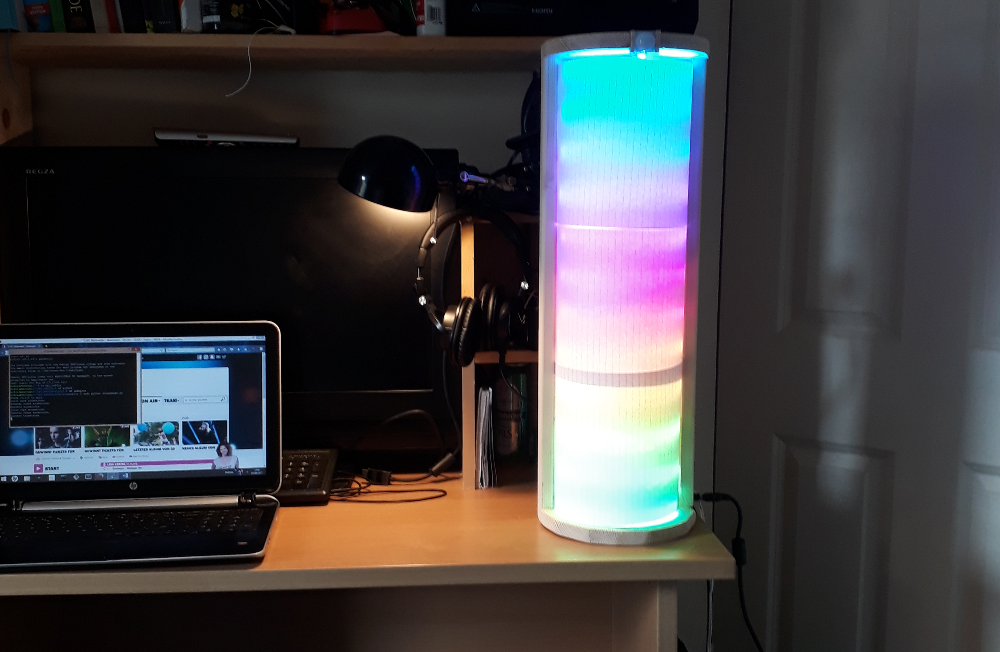

Project: SURFCAST
An LED Lamp which enables you to instantly be informed about the local surf forecast
In an unobtrusive way, while seamlessly integrating into your daily routine
Description
This is a Raspberry Pi Project
The Raspberry Pi is a mini computer which is designed to be lightweight and cheap but almost a fully functional computer. This makes it perfect for small projects such as this.
The Surfcast project is designed for surfers or any water sport enthusiast, whether your miles from the beach or always feel the need to have a connection with the local surf. This lamp will bring the waves to you!
The motion activated lamp will download the most current and accurate local surf forecast and display it using 120 integrated LEDs. Enabling you to effortlessly glanse at this lamp and make a decision to go for a surf.
There are many ways to get the surf forecast but this lamp makes it almost effortless.
Accreditation
The forecast data generated is done completly by www.magicseaweed.com and full accreditation to there service for this data is given with much appreciation.
Details
Key features and Functionality
- Motion activated sensor that starts the forecast display, this sensor can be easliy programmed to be triggered after various motion intervals
- Displays a 24 hour surf forecast, a new forecast is fetched through the MagicSeaWeed API once the forecast is older than 24 hours
- A wave set is represented by a row of LEDs which shows the height of the wave by the color it bears and its speed by its motion through the display
- Displays Primary, secondary and combined wave heights and periods between wave sets in 3 hour time blocks, starting from next 3 hours to 24 hours a head
- Has the ability to select multiple beach locations which is dependant by the MagicSeaWeed API service
Basically 3 projects in 1!
- Retrieve surf forecast API thorugh Java program
- Display forecast to LEDs using Python
- Hardware assembly project
Basic demo video
With Cover
Without Cover
Reading the display and what it means

In general the greater the wave period, the better the swell. The amount of time it takes for two successive wave crests to pass through a determined point is called swell period or wave interval. The swell period is critical surf knowledge because it ultimately measures the quality of the upcoming surf session.
A wave is represented by a row of LEDs in the lamp and there colour is determined by the wave height.
The surf forecast is split into 3 hour time blocks and each time block has a primary swell, secondary swell and combined or average swell to give a total of 3 waves per time block, these period swell values determines the speed of the wave in the lamp to give a feeling of the quality of waves set in the forecast.
Components
- 1 X Raspberry Pi @ €35.00
- 2 X Adafruit NeoPixel Digital RGB LED Strip - 60 LED/m @ €24.95 per/m
- 1 X wires spool diff colors 25ft @ €27.50
- 1 X Motion sensor @ €9.95
- 1 X 74AHCT125 - Quad Level-Shifter (3V to 5V) @ €1.50
- 1 X 5V 10A switching power supply @ €25.00
- 1 X Female DC Power adapter - 2.1mm jack to screw terminal block @ €2.00
- 1 X Full sized breadboard @ €5.95
- 1 X Assembled Pi Cobbler Plus for Pi B+/A+/Pi 2/Pi 3 @ €6.95
- 1 X Adafruit Perma-Proto Half-sized Breadboard PCB - Single @ €4.50
(Links and prices)
Adafruit Neopixel soldering/wiring tutorial, (PDF download)
Build and Design



Code Implementation
Code Discussion
This java code first checks to see if a previous file with the json forecast data exists and if not creates a new file to be written to. A connection to the magicseaweed website is then tested whether it is accessible or not, if it is then it checks to see how old the previous file is, if its older than 24 hours it will begin to stream the json data in and write it to the file for use by the python script.
IF the file is not older than 24 hours it will just use the current file, this ensures that the API service is not called more than once a day which is in the terms of use of the magicseaweed API service. In the end a valid json file should exist.

Conclusion
This was a fun project to make and has a lot of possibilities to add to its functionaltiy as it can display various colours through the leds, further improvement of the wave display will be made by adding more wave details in the display.
The ability to display other types of weather such as temperature, wind and precipitation is another opportunity to add to this project by implementing another API service and creating a general weather display script
Issues in this project:
The main issue was the Raspberry Pi's wifi connection which seems to drop out frequently, the main purpose for the wifi is to connect to the API service and also to update the RPIs time from a server on the internet as there is no inbuilt clock hardware on the RPI. To resolve this issue it required running a subprocess which refreshes the network in order to regain connectivity. This is an issue with the Raspberry Pi model B itself as of 02/03/2018.
The total cost of this project was €130.00
I hope this project will be useful to other poeple who are interested in building similar projects. If you had any questions send to me at johnmulcahy346@gmail.com